13.1 สถิติผู้ช่วยสอน (TA)#
เป้าหมายของขั้นตอนนี้ ให้ท่านเห็นภาพรวมว่าผู้ช่วยสอนแต่ละคนรับงานไปมากน้อยเพียงใด เพื่อกระจายภาระงานให้เป็นธรรมและจับสัญญาณผิดปกติได้ทันที เมนูอยู่ที่ ตั้งค่ารายวิชา > สถิติ TA
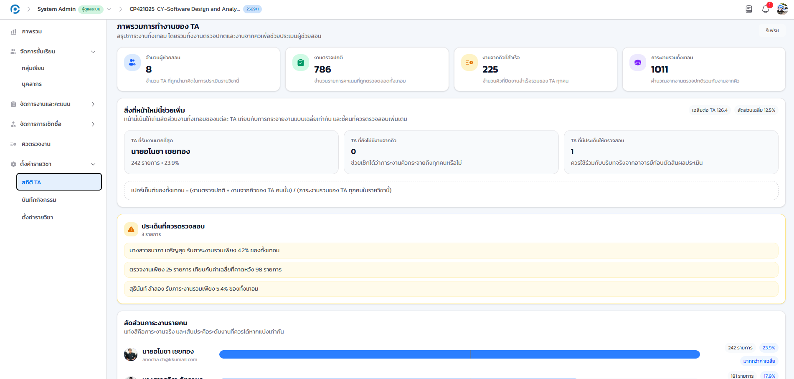
- แถบสรุปด้านบน
- จำนวนผู้ช่วยสอนทั้งหมด งานตรวจปกติ งานจากคิวที่สำเร็จ และภาระงานรวมทั้งเทอม
- TA ที่รับงานมากที่สุด
- จัดอันดับผู้ช่วยสอนตามปริมาณงานที่รับ พร้อมสัดส่วนภาระงานเทียบกับทีม
- TA ที่ยังไม่มีงานจากคิว
- รายชื่อผู้ช่วยสอนที่ยังไม่มีการรับงานจากระบบคิวในช่วงเวลาที่ดู
- ประเด็นที่ควรตรวจสอบ
- ชี้จุดที่ควรพิจารณา เช่น TA ที่รับภาระงานน้อยผิดปกติเมื่อเทียบกับเพื่อนร่วมทีม
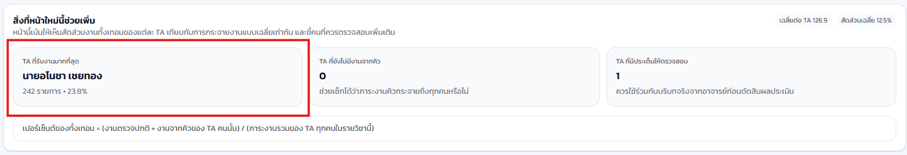
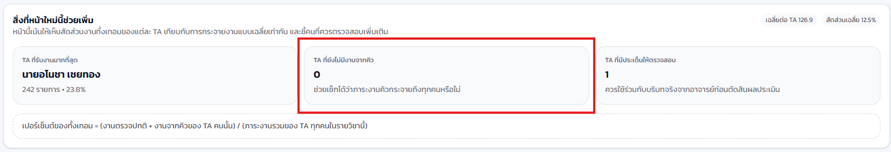
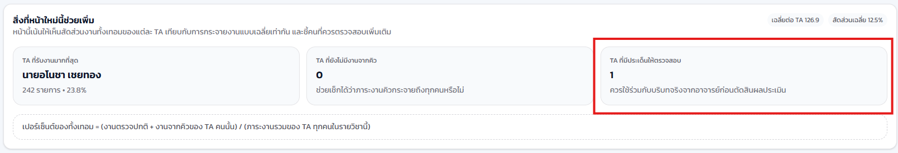
ควรตรวจหน้าสถิติ TA เป็นระยะตลอดเทอม โดยเฉพาะช่วงก่อนปิดเทอมที่งานตรวจสะสมมาก จะช่วยให้ท่านมอบหมายงานเพิ่มเติมให้ผู้ช่วยสอนที่ว่างได้ทันเวลา
13.2 บันทึกกิจกรรมรายวิชา (Activity Log)#
เป้าหมายของขั้นตอนนี้ ให้ท่านตรวจสอบย้อนหลังได้ว่าใครทำอะไร เมื่อใด ในรายวิชานี้ ทั้งการกระทำของอาจารย์ ผู้ช่วยสอน และเหตุการณ์ที่ระบบบันทึกเองอัตโนมัติ เมนูอยู่ที่ ตั้งค่ารายวิชา > บันทึกกิจกรรม
หน้านี้แสดงเหตุการณ์เป็น ไทม์ไลน์แบ่งตามวัน ไม่ใช่ตารางแถวเดียวเหมือนคู่มือฉบับก่อน เนื่องจากตารางเหมาะกับการค้นหา "แถวที่ต้องการ" เพียงแถวเดียว ในขณะที่ไทม์ไลน์ตอบคำถามที่อาจารย์ถามบ่อยกว่า คือ "เกิดอะไรขึ้นในชั้นเรียนนี้บ้าง" ได้ดีกว่า
- เข้าเมนู บันทึกกิจกรรม ระบบจะเปิดแท็บ ไทม์ไลน์กิจกรรม เป็นค่าเริ่มต้น แสดงเหตุการณ์แบ่งกลุ่มตามวัน เรียงจากล่าสุดไปเก่าสุด
- สลับไปแท็บ สรุปภาพรวม เพื่อดูข้อมูลเชิงสถิติ เช่น จำนวนเหตุการณ์แยกตามหมวดหมู่และผู้ดำเนินการ
- ใช้ ตัวกรอง จำกัดขอบเขตตามช่วงเวลา หมวดหมู่ การกระทำ หรือผู้ดำเนินการ เพื่อค้นหาเหตุการณ์ที่ต้องการ
- คลิกปุ่ม ส่งออก CSV เพื่อดาวน์โหลดบันทึกไปเก็บหรือวิเคราะห์ต่อ
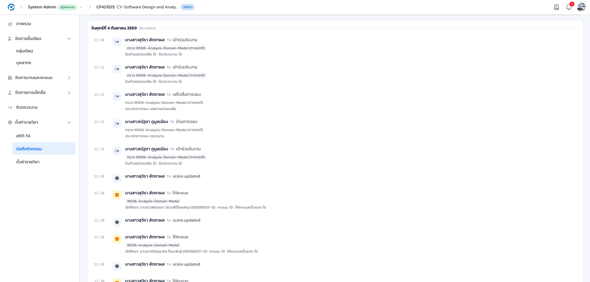
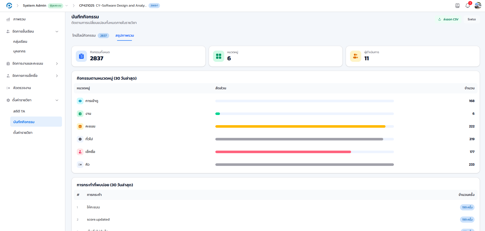
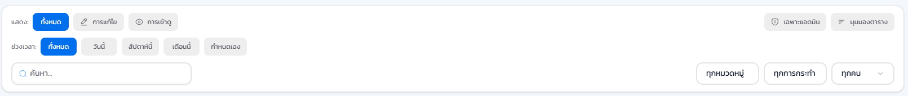
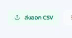
13.3 ดูรายละเอียดเหตุการณ์#
เป้าหมายของขั้นตอนนี้ ให้ท่านตรวจสอบเหตุการณ์แต่ละรายการได้ลึกถึงระดับผู้กระทำ ค่าที่เปลี่ยนแปลง และข้อมูลดิบ ซึ่งจำเป็นเมื่อต้องสืบสวนกรณีคะแนนหรือสิทธิ์เปลี่ยนแปลงผิดปกติ
- คลิกที่แถวเหตุการณ์ใดก็ได้ในไทม์ไลน์ เพื่อเปิด แผงรายละเอียด ของเหตุการณ์นั้น
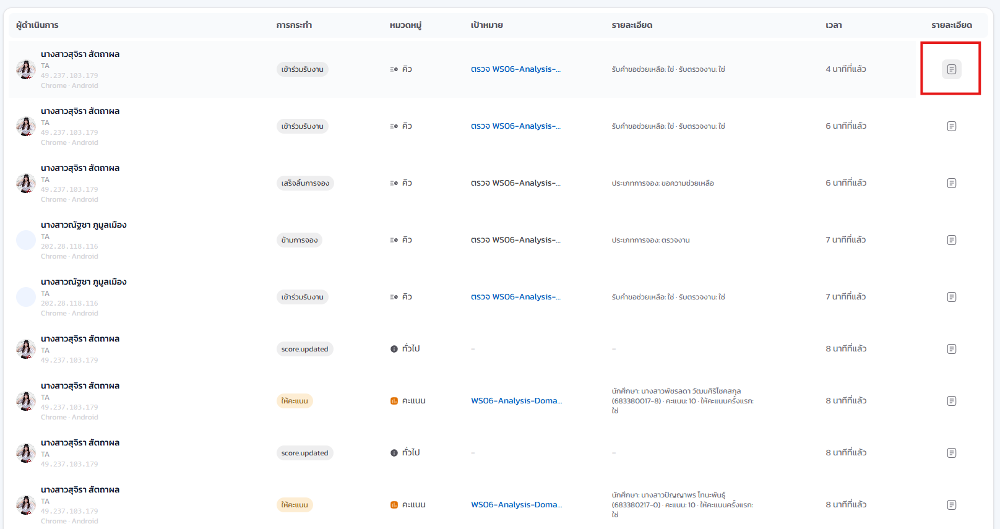
- ผู้ดำเนินการและ IP
- ชื่อผู้ดำเนินการ พร้อมหมายเลข IP และชนิดอุปกรณ์ที่ใช้ทำรายการ ใช้ยืนยันตัวตนเมื่อสงสัยว่ามีการดำเนินการจากบัญชีที่ไม่ใช่เจ้าของ
- ป้าย "ระบบตรวจพบเอง" / "ทำโดยผู้ใช้"
- แยกให้เห็นชัดว่าเหตุการณ์นี้ระบบบันทึกอัตโนมัติ (เช่น การหมดเวลาของงาน) หรือเป็นการกระทำของบุคคลจริง
- มุมมองเปรียบเทียบก่อน/หลัง
- แสดงค่าที่เปลี่ยนแปลงเป็นคู่ ค่าก่อนหน้าและค่าใหม่ สำหรับเหตุการณ์ที่มีการแก้ไขข้อมูล
- ชิปหัวเรื่อง/เป้าหมาย
- ชื่อบุคคลหรือรายวิชาที่เกี่ยวข้องกับเหตุการณ์ แสดงเป็นชิปที่คลิกได้
- ข้อมูลดิบ (JSON)
- payload ดิบของเหตุการณ์ สำหรับตรวจสอบละเอียดหรือส่งต่อให้ผู้ดูแลระบบ
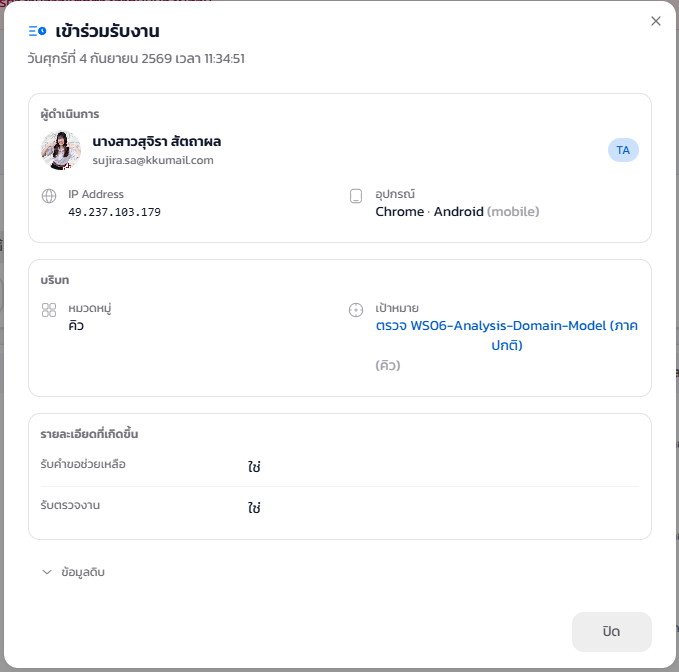
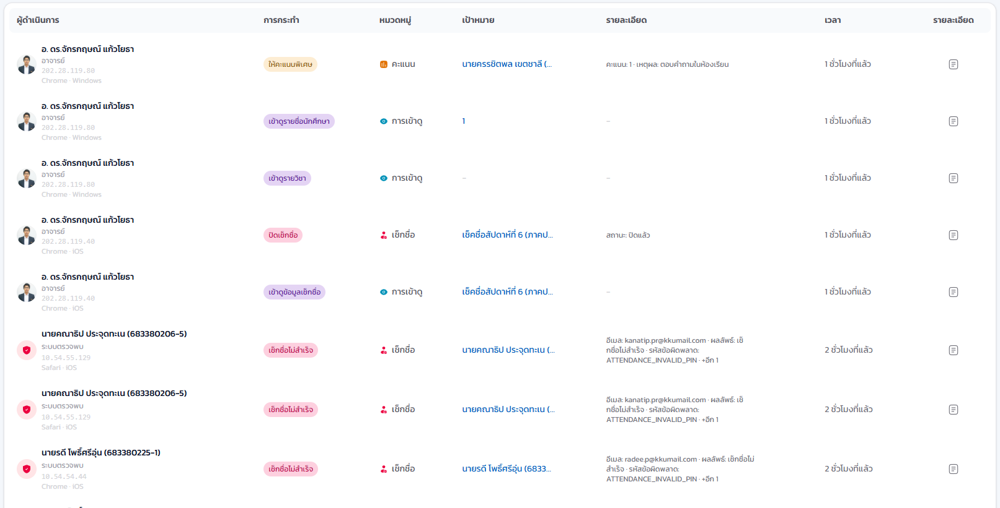
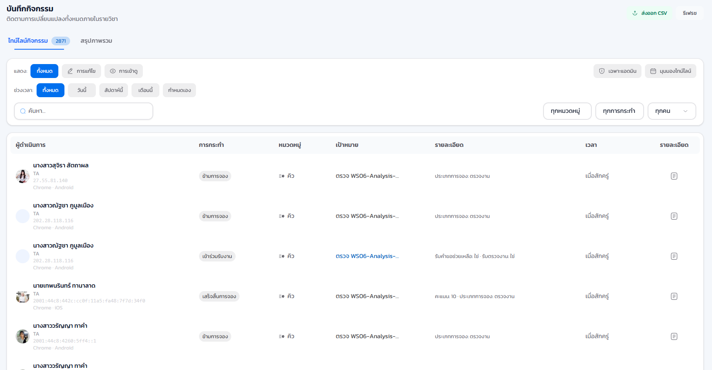
- คลิกที่ ชิปชื่อบุคคลหรือรายวิชา ในแผงรายละเอียด เพื่อกรองไทม์ไลน์ทั้งหมดให้เหลือเฉพาะเหตุการณ์ของหัวเรื่องนั้น
- เปิดแท็บ ข้อมูลดิบ เพื่อดู payload แบบ JSON ของเหตุการณ์ หากต้องยืนยันรายละเอียดที่ไม่ได้แสดงในมุมมองปกติ
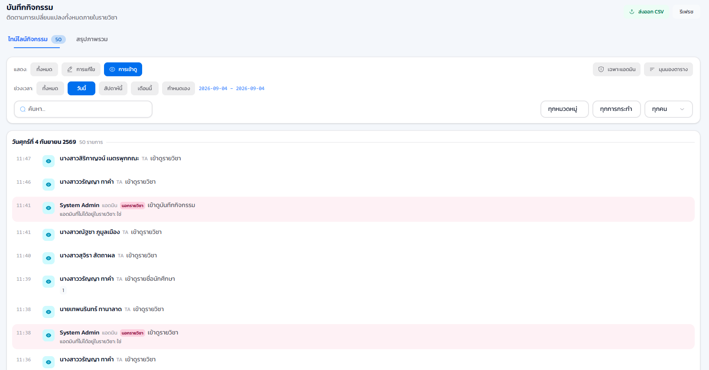
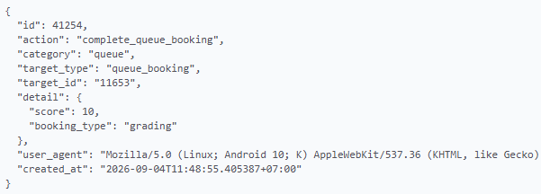
เมื่อคลิกชิปหัวเรื่องแล้ว ไทม์ไลน์ทั้งหน้าจะกรองเหลือเฉพาะเหตุการณ์ที่เกี่ยวข้องกับบุคคลหรือรายวิชานั้น ท่านสามารถคลิกล้างตัวกรองเพื่อกลับไปดูไทม์ไลน์เต็มได้ทุกเมื่อ
เหตุการณ์ที่มีป้าย "ระบบตรวจพบเอง" ไม่ได้แปลว่าไม่มีนัยสำคัญ เช่น การหมดเวลาของงานหรือการปิดคิวอัตโนมัติ ก็ควรตรวจสอบเช่นเดียวกับเหตุการณ์ที่ผู้ใช้ทำเอง หากพบความผิดปกติ